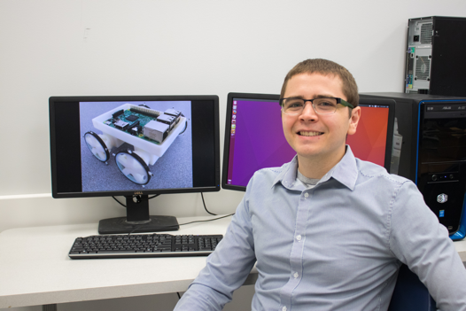
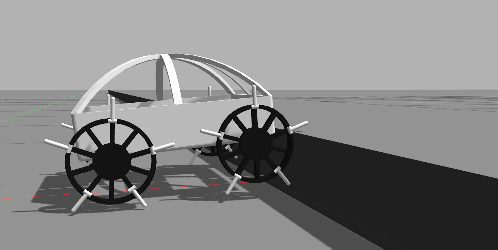

My name is Anthony Clark and I am an Assistant Professor in the Computer Science Department at Pomona College (The image above was provided by Collin O’Connell). The following external links should be useful to get an idea about my research and advising philosophies:

My research focuses on making autonomous robots more robust and adaptive. For example, in my lab we use optimization algorithms to make multimodal systems better able to handle unpredictable circumstances. Check out the following links for more information: